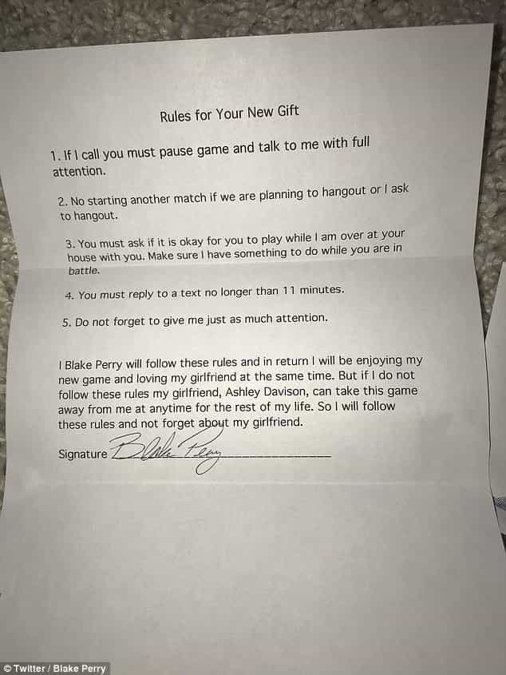

This account syndicates news from other media outlets.


A young woman got her boyfriend the new Call of Duty game for Xbox – a very generous act indeed. However, this gift came with a special set of rules attached.
Ashley Davison created a list of five rules for her boyfriend Blake Perry, including statutes requiring him to put down the game if she calls and to keep her entertained if he’s playing the game in her presence.

Davison, a student at the University of Central Oklahoma, even included a space for Perry to sign the agreement, that required he ‘not forget about his girlfriend’ while playing the game.
Perry’s original tweet has been liked over 30,000 times. Users on the social media site have had quite a lot to say about Davison’s list, with nearly a thousand responses to the original tweet, in which Perry said ‘Little does she know these rules will be broken.’
One Twitter user replied to Perry’s tweet, saying ‘ Nah bro… I’ve been through this before, she wants you to think it’s a joke but in reality if you don’t follow those rules she will go postal on you. Just beware.’
Davison replied to this Tweet in stride, stating ‘ Don’t worry I’m not going to go postal on him, it 100% was a joke! Thanks for looking out for him though!’
Other Twitter users also chimed in about the Christmas gift. ‘Joke’s on her – you can’t pause Call of Duty,’ one said. Another even suggested that Perry buy Davison a copy of the game. ‘Get her the same gift and play online together,’ the Twitter user said.
Davison’s list has attracted the eyes of tens of thousands online in the days following Christmas, with over 30,000 likes on Twitter
Don’t Miss: 20 Things You Can Do Instead Of Playing Video Games